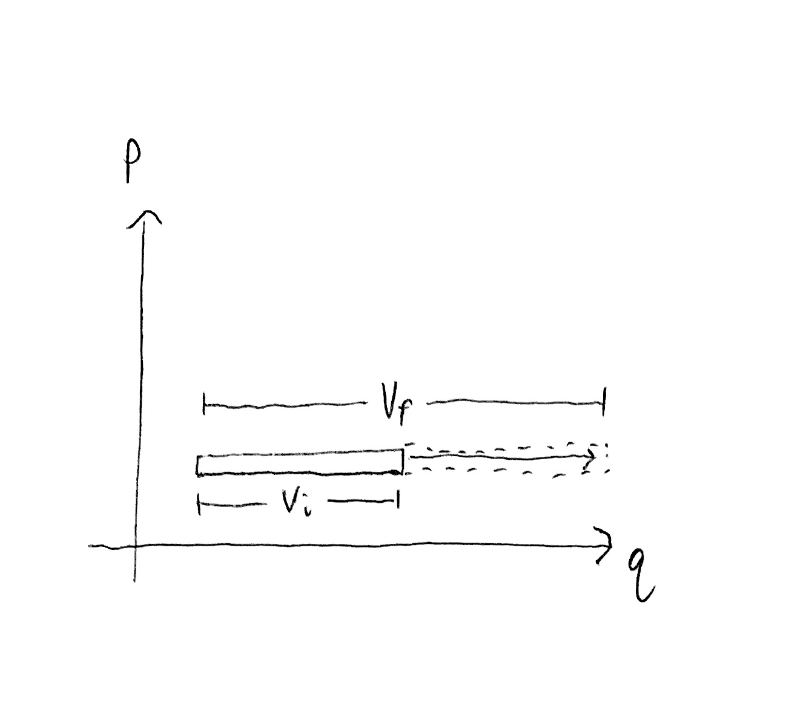
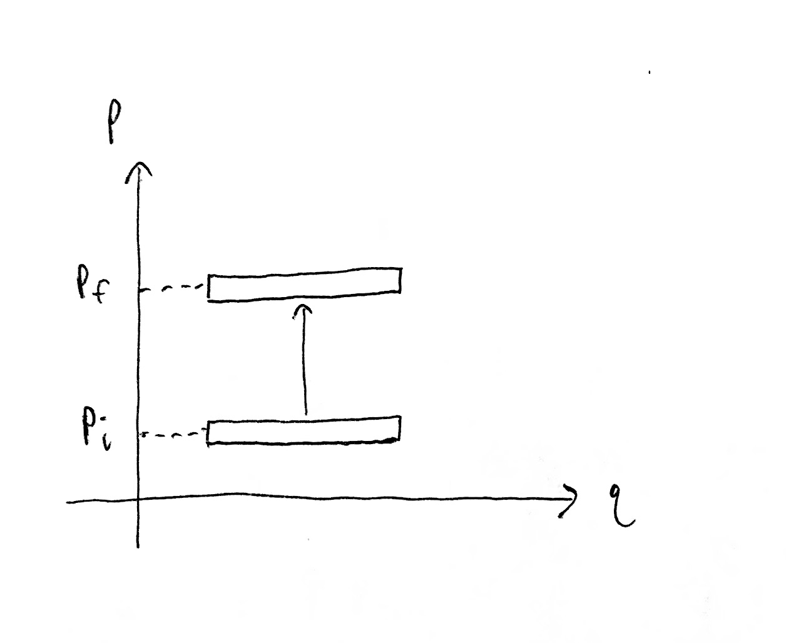

Derivation of the change in entropy formula for an ideal gas (used in the Carnot Cycle post) from state space volumes. Discussion about connections between the observer’s information about the gas and how that relates to the reversibility of transformations applied to the gas.
$$
\newcommand{\0}{\mathrm{false}}
\newcommand{\1}{\mathrm{true}}
\newcommand{\mb}{\mathbb}
\newcommand{\mc}{\mathcal}
\newcommand{\mf}{\mathfrak}
\newcommand{\and}{\wedge}
\newcommand{\or}{\vee}
\newcommand{\a}{\alpha}
\newcommand{\s}{\sigma}
\newcommand{\t}{\tau}
\newcommand{\th}{\theta}
\newcommand{\T}{\Theta}
\newcommand{\D}{\Delta}
\newcommand{\d}{\delta}
\newcommand{\dd}{\text{d}}
\newcommand{\pd}{\partial}
\newcommand{\o}{\omega}
\newcommand{\O}{\Omega}
\newcommand{\x}{\xi}
\newcommand{\z}{\zeta}
\newcommand{\fa}{\forall}
\newcommand{\ex}{\exists}
\newcommand{\X}{\mc{X}}
\newcommand{\Y}{\mc{Y}}
\newcommand{\Z}{\mc{Z}}
\newcommand{\P}{\Psi}
\newcommand{\y}{\psi}
\newcommand{\l}{\lambda}
\newcommand{\G}{\Gamma}
\newcommand{\B}{\mb{B}}
\newcommand{\m}{\times}
\newcommand{\E}{\mb{E}}
\newcommand{\R}{\mb{R}}
\newcommand{\H}{\mc{H}}
\newcommand{\L}{\Lambda}
\newcommand{\e}{\varepsilon}
\newcommand{\set}[1]{\left\{#1\right\}}
\newcommand{\tup}[1]{\left(#1\right)}
\newcommand{\par}{\tup}
\newcommand{\abs}[1]{\left\lvert#1\right\rvert}
\newcommand{\vtup}[1]{\left\langle#1\right\rangle}
\newcommand{\btup}[1]{\left[#1\right]}
\newcommand{\inv}[1]{{#1}^{-1}}
\newcommand{\ceil}[1]{\left\lceil#1\right\rceil}
\newcommand{\dom}[2]{#1_{\mid #2}}
\newcommand{\df}{\overset{\mathrm{def}}{=}}
\newcommand{\up}[1]{^{(#1)}}
\newcommand{\restr}[1]{_{\mid{#1}}}
\newcommand{\dt}{{\D t}}
\newcommand{\Dt}{{\D t}}
\newcommand{\ddT}{{\delta T}}
\newcommand{\Mid}{\,\middle|\,}
\newcommand{\qed}{\ \ \blacksquare}
\newcommand{\p}{\vec{p}}
\newcommand{\q}{\vec{q}}
$$
Observer information and reversibility
In this post I will interpret entropy as measuring modeling uncertainty about some system, as in The Reversibility Problem, Why Doesn't Uncopying Defeat The 2nd Law and Reversible Szilard Cycle Problem.
To recap, the state of some system we are modeling is described by a real-valued tuple $\o = (\o_1,\o_2,\dots,\o_{2n}) = (q_1, q_n, p_1, p_n) \in \O \subseteq \R^{2n}$, where $\O$ is the state space of that system. The system’s time-evolution is defined by a family of functions, $\set{\t_\Dt\mid\Dt\in\R}$, called propagators, where each $\t_\Dt:\O\to\O$ maps states at time $t$ to time $t+\Dt$ (for all $t\in\R$, making these propagators time-independent.)
Suppose we know that the system is initialized in some state region $\L_0 \subseteq \O$, i.e. we know that $\o_0 \in \L_0$ where $\o_0 \in \O$ is the initial state of the system. We know this either by performing a measurement on the system which produces only partial information, or by assumption. Then at any time $t$, we know that the state of the system is $\o_t \in \L_t = \t_t(\L_0)$, assuming the propagator $\t_t$ is the correct time-evolution of the system.
Let $\mu$ be a uniform measure on $\O$ (need not be normalized), i.e. $\mu$ is defined by some constant density function on $\O$ (see Liouville's Theorem#uniform-measure). Then by Liouville $\mu$ is uniform under any canonical change of coordinates. See Liouville's Theorem#measure-preservation.
Given two state regions, $\L_A\subseteq\O$ and $\L_B\subseteq\O$, we can quantify their relative size difference with the fraction $\mu(\L_A)/\mu(\L_B)$. Or expressed in the unit of bits,
$$
\D h = \lg\tup{\frac{\mu(\L_A)}{\mu(\L_B)}}
$$
(where $\lg = \log_2$ is log base 2), which is positive when $\mu(\L_A) > \mu(\L_B)$ and $0$ when $\mu(\L_A) = \mu(\L_B)$. Then $\D h$ is the number of halvings to go from $\L_A$ to $\L_B$. See Bayesian information theory.
Why do we care about the quantity $\D h$ in the context of thermodynamics? Because of the connection to (ir)reversibility of the process in question. But what is that connection? Suppose our goal is to have a system starting in state region $\L_0$ at time $0$ to reliably end up in the state region $\L_\text{final}$ at time $t$ (i.e. we want $\t_t(\L_0) \subseteq \L_\text{final}$), then by Liouville we must have $\mu(\L_0)=\mu(\t_t(\L_0)) \leq \mu(\L_\text{final})$ (if the system is isolated during this process). This is a necessary but not sufficient condition for what I’ll call reliability.
The formal problem statement is to choose a propagator family $\set{\t_\Dt\mid\Dt\in\R}$ (equivalently a Hamiltonian) that minimizes $\mu(\t_t(\L_0) - \L_\text{final})$ (minimize the quantity of $\t_t(\L_0)$ outside of $\L_\text{final}$). We are restricted to physically valid propagators which also preserve the system’s internal dynamics. E.g. the particles of a gas collide in the way the usually do, but we have freedom to chose how the container morphs over time (the container interacts with the gas particles via an external potential). See The Reversibility Problem#naive-formulation.
Since $\D h = \lg\tup{\mu(\L_\text{final})/\mu(\L_0)}=\lg\tup{\mu(\L_\text{final})/\mu(\t_t(\L_0))}$, if $\D h = \lg\tup{\mu(\L_\text{final})/\mu(\L_0)} < 0$, then we know that there is no physically valid time-evolution function (obeying some Hamiltonian) which reliably maps $\L_0$ into a subset of $\L_\text{final}$ without external interaction. No matter what propagators we choose, some of the trajectories starting in $\L_0$ must end up outside of $\L_\text{final}$.
On the other hand, if $\D h \geq 0$, then a perfectly reliable process from $\L_0$ into $\L_\text{final}$ is not ruled out, but that is still not enough to conclude that perfect reliability is achievable. See Why Doesn't Uncopying Defeat The 2nd Law.
Take a moment to compare the statement, “$\D h < 0$ implies that perfect reliability of the $\L_0$-to-$\L_\text{final}$ transition is impossible,” with the 2nd law of thermodynamics which roughly states, “entropy of an isolated system cannot decrease.”
Observer information as entropy?
Hopefully the above discussion elucidated the connection between an experimenter’s state of information about a system and the reversibility of that system (from the experimenter’s perspective). This motivates our interest in the quantity $\lg(\mu(\L_\text{final}) / \mu(\L_\text{initial}))$ when our system is an $N$-particle gas which we want reliably transition from $\L_\text{initial}$ to $\L_\text{final}$ for the purposes of extracting work from heat energy, as illustrated in the Carnot Cycle.
In the Carnot cycle, we have a gas described by the macroscopic quantities of (spatial volume) $V$, temperature $T$, and number of particles $N$. This gas is operated on by a sequence of processes (phases), each of which have an initial gas state $(V_i, T_i, N_i)$ and final gas state $(V_f, T_f, N_f)$, where $N_i=N_f=N$ for a closed gas. For the remainder of this post, assume that $N$ is held fixed.
For the purposes of determining the thermodynamic efficiency of the Carnot cycle, we used the quantity
$$
nR\log\par{\frac{V_f}{V_i}} + nC_V\lg\par{\frac{T_f}{T_i}}
$$
which is defined as the thermodynamic change in entropy of the gas. Here, $C_V$ is the molar heat capacity at a constant volume (a constant that depends on the type of gas being considered), $R$ is the gas constant, and $n$ is the number of moles of gas, i.e. $n = N/A$ where $A$ is the Avogadro number.
References for change in entropy formula:
- https://en.wikipedia.org/wiki/Entropy#Cooling_and_heating
- https://www.grc.nasa.gov/WWW/K-12/airplane/entropy.html
The next section of this post will derive this change in entropy formula. We suppose that the macroscopic state, or macrostate, $(V, T, N)$ identifies the gas’s microscopic state, or microstate, $\o \in\O$ as being in the state region comprised of all microstates which have volume $V$, temperature $T$, and number of particles $N$. In other words, macrostate is a state region (i.e. a set of states). Let $\L(V, T, N)\subseteq\O$ be the macrostate (set of states) for $(V, T, N)$.
With $\mu$ being a uniform measure on $\O$, we do indeed find that
$$
\lg\par{\frac{\mu(\L(V_f, T_f, N_f)}{\mu(\L(V_i, T_i, N_i)}} \propto nR\log\par{\frac{V_f}{V_i}} + nC_V\lg\par{\frac{T_f}{T_i}}\,.
$$
(This relationship ends up being approximate.)
Derivation of ideal gas entropy
This derivation is similar to the one in “Statistical Physics of Particles” by Kardar, section 4.4 “The Ideal Gas”.
Let $\O$ be the state space of all $N$ particle gasses, where $(\q,\p)=(\q_1,\dots,\q_N,\p_1,\dots,\p_N)\in\O$ with $\q_i$ and $\p_i$ being scalars, pairs, or 3-tuples, depending on whether we are working in 1D, 2D or 3D space. Let $D$ be the dimensionality of space so that $\O=\R^{DN}$. Each $\o\in\O$ is a microstate.
We have an ideal gas of $N$ particles at total kinetic energy $E$ and confined to a container with spatial volume $V$. This defines a macrostate $\L(E,V,N)\subseteq\O$, which is the set of all microstates satisfying these criteria, specifically
$$\begin{aligned}
\L(E,V,N) = \Bigg\{(\q,\p)\in\O \,\,\Bigg\vert\, &\Big(\fa i\in\set{1,\dots,N}:\q_i \in \text{container}\Big)\\
& \text{and}\ \par{\frac{1}{2m}\sum_{i=1}^N {\p_i}^2 \in [E,E+\e]}\Bigg\}
\end{aligned}$$
where $\e>0$ is our uncertainty about the total energy (our measurement precision) and $[E,E+\e]$ is the closed interval from $E$ to $E+\e$.
Let $\mu$ be the uniform unit measure on $\O$ (defined by constant density of 1 everywhere) w.r.t. our chosen unit of spatial length, so that the unit-hypercube has a $\mu$-volume of 1. We want to find the volume of our macrostate $\mu(\L(E,V,N))$. We can do this by noticing that, (1) each particle position $q_i$ independently occupies any point in the container with volume $V$, and (2) the momenta are constrained to lie on a spherical shell containing the surface of the $DN$-ball with radius $r = \sqrt{2mE}$. This shell has thickness $\D r = \sqrt{2m(E+\e)} - \sqrt{2mE}$.
The hypervolume of the unit $n$-ball with radius $r$ (interior volume of sphere in $n$ dimensions) is
$$
B_n(r) = \frac{\pi^{\frac{n}{2}}}{\tup{\frac{n}{2}}!}r^{n}\,.
$$
(Here $n=DN$ and not the number of moles of gas.)
Then the macrostate hypervolume is
$$
\mu(\L(E,V,N)) = V^N \cdot\left[B_{DN}\par{\sqrt{2m(E+\e)}} - B_{DN}\par{\sqrt{2mE}}\right]\,.
$$
Expanding out the term in square brackets, we get
$$\begin{aligned}
& B_{n}\par{\sqrt{2m(E+\e)}} - B_{n}\par{\sqrt{2mE}} \\
=\ & \frac{\pi^{\frac{n}{2}}}{\tup{\frac{n}{2}}!}\par{2m}^{n/2}\left[\par{E+\e}^{n/2} - E^{n/2}\right]\,.
\end{aligned}$$
We can make a convenient approximation when $\e$ is small. Using the generalized binomial theorem, we have
$$\begin{aligned}
& (E+\e)^{n/2} - E^{n/2} \\
=\ & \left[\sum_{k=0}^{\infty} {n/2\choose k}E^{n/2-k}{\e}^k\right] - E^{n/2} \\
=\ & \par{E^{n/2} - E^{n/2}} + n/2\par{E^{n/2-1}}\e + {n/2\choose 2}E^{n/2-2}{\e}^2 + \dots \\
\approx\ & n/2\par{E^{n/2-1}}\e
\end{aligned}$$
where $\e^k\approx 0$ for $k\geq2$ if we assume that $\e$ is small enough so that higher powers of $\e$ are negligible (this is a 1st order approximation).
(The generalized binomial theorem reduces to the standard binomial theorem for integer powers, i.e. when $n/2$ is an integer we have ${n/2\choose k}=0$ for all $k>n/2$.)
Plugging in our approximation (with $n=DN$), we have
$$
\mu(\L(E,V,N)) \approx V^N\frac{\pi^{\frac{DN}{2}}}{\tup{\frac{DN}{2}}!}\par{2m}^{DN/2}\frac{DN}{2}E^{DN/2-1}\e
$$
Given two macrostates, $\L(E_i,V_i,N)$ and $\L(E_f,V_f,N)$, the log-ratio between their $\mu$-sizes is approximately
$$
\D h = \lg\par{\frac{\mu(\L(E_f,V_f,N))}{\mu(\L(E_i,V_i,N))}} \approx N\lg\par{\frac{V_f}{V_i}} + (DN/2-1)\lg\par{\frac{E_f}{E_i}}\,.
$$
We more or less have the expression we want. It is now a matter of transforming some constants and scaling.
As stated above, $\D h$ is a quantity with the unit bits (log base 2). Boltzmann defined thermodynamic entropy as $S = k_B\ln W$ where $W$ is the normalized phase volume (i.e. probability) of some state region (i.e. macrostate) and $k_B$ is the Boltzmann constant. Then $\D S$ and $\D h$ differ by a scaling factor, specifically $\D S = \frac{k_B}{\lg e}\D h$. Thermodynamic entropy $S$ has the units $J/K$ (Joules per Kelvin).
A few additional transformations gives us the final entropy equation. Let’s let $D=3$ (the gas is in 3D space), since the remaining transformations rely on this. We are using total energy $E$ instead of temperature to define our macrostates, but we can convert total energy to temperature using the kinetic definition of temperature, which says $T \propto E/3N$, i.e. that temperature is proportional to the total kinetic energy averaged across all of the degrees of freedom of the system. Our gas has $3N$ degrees of freedom. The scaling factor determines the temperature units. In this case, we have $T=\frac{2}{3Nk_B}E$. Then $T_f/T_i = E_f/E_i$ when $N_f=N_i$.
Finally, we make use of the definitions of the gas constant, $R = Ak_B=\frac{N}{n}k_B$, and the monatomic constant volume molar heat capacity, $C_V = \frac{3}{2}R = \frac{3N}{2n}k_B$.
Then
$$\begin{aligned}
\D S = k_B\frac{\D h}{\lg(e)} &\approx k_BN\ln\par{\frac{V_f}{V_i}} + k_B(3N/2-1)\ln\par{\frac{E_f}{E_i}} \\
&= k_BN\lg\par{\frac{V_f}{V_i}} + k_B(3N/2-1)\lg\par{\frac{T_f}{T_i}} \\
&\approx k_BN\ln\par{\frac{V_f}{V_i}} + k_B(3N/2)\ln\par{\frac{T_f}{T_i}} \\
&= nR\ln\par{\frac{V_f}{V_i}} + nC_V\ln\par{\frac{T_f}{T_i}}\,.
\end{aligned}$$
The second approximation holds when $N$ is large so that $3N/2-1 \approx 3N/2$.
As an amusing aside, we can view thermodynamic entropy as just having a different log base than $\D h$, where
$$
S=k_B\frac{\lg W}{\lg(e)} = \frac{\lg W}{\frac{1}{k_B}\lg(e)} = \frac{\lg W}{\lg(e^{1/k_B})} = \log_{e^{1/k_B}} W\,.
$$
We can see that thermodynamic entropy uses log base $e^{1/k_B} \approx \exp(7.24297 \times 10^{22})$, which is an insanely large number with $\log_{10}(\exp(7.24297 \times 10^{22})) \approx 3.1456\times 10^{22}$ digits in base 10. Then $\D S$ measures the number of times we divide $\mu$-size by $e^{1/k_B}$ when we transform between two phase regions, instead of the number of halvings, i.e. number of times we divide by 2.
In natural units, $k_B=1$.
See https://en.wikipedia.org/wiki/Boltzmann_constant#Natural_units.
Temperature and uncertainty
It may not be intuitively obvious why state region size should depend on temperature.
Hopefully it is intuitive that state region size depends on volume. If the spatial coordinate $q$ is confined to an interval, then the marginal size of that region is proportional to the length of the interval. I.e. the larger the container the more possible states the gas can be in.

On the other hand, the temperature is proportional to the kinetic energy of each degree of freedom which is proportional to momentum squared. In other words, moving our state region up and down along a $p$ axis changes the temperature of the gas accordingly. But we are only translating the state region, rather than stretching or shrinking it, so how does the size of the state region change?

Indeed, for a gas with one particle in 1D space, i.e. $DN = 1$, the state region size does not depend on temperature.
When $DN > 1$, changing the temperature (and thus total kinetic energy) changes the radius of a hyperspherical shell in $DN$-dimensional momentum space, which changes the hyper-surfacearea of that shell (which is proportional to the hypervolume of the shell when it has small thickness).

Absolute entropy
I want to point out that entropy, $S$, and change in entropy, $\D S$, are very different beasts.
Going back to our information-theoretic perspective, we have $\D h = \lg\tup{\mu(\L_A)/\mu(\L_B)}$ is the change in information (i.e. information gain) by going from state region $\L_A$ to state region $\L_B$. This implies we are viewing $h_A=\lg\par{1/\mu(\L_A)}$ and $h_B=\lg\par{1/\mu(\L_B)}$ as absolute quantities of information that $\L_A$ and $\L_B$ are respectively worth. This would be a valid perspective if the measure $\mu$ were a probability measure where $\mu(\O)=1$. However, if the domain $\O$ is, say $\R^n$, then there does not exist a uniform probability measure. If we tried to normalized a given uniform measure $\mu$, we’d find that $\lg\par{\mu(\O)/\mu(\L_A)}=\infty$, i.e. $\L_A$ is worth an infinite amount of information.
One reason to prefer to only consider changes in information $\D h$ rather than absolute information $h$ is so that we are free to put a uniform measure on $\R^n$, have it be unnormalized, and don’t need to care about the arbitrary choice of which uniform measure to use (each defined by a different choice of constant density). With Liouville’s theorem we are assured that uniform measures are uniform in all canonical coordinate systems. Then $\D h$ is a uniquely determined quantity just by stating that we are using a uniform measure on state space (but $h$ depends on our particular choice of uniform measure).
Importantly, even when physicists are calculating an entropy $S$ for a system, this is not absolute in the sense that I mean. The Boltzmann entropy formula is
$$
S = k_B\ln W
$$
where $W$ is the probability of the corresponding macrostate we wish to calculate the entropy for. Then $W$, and thus $S$, depends on the set of allowed macrostates of the system, because that determines the normalizing factor which makes our measure over states a probability measure. However, the change in entropy $\D S = k_B\ln \par{W_2/W_1}$ between two macrostates does not depend on the set of allowed macrostates, since the normalizing factor gets canceled out in the fraction $W_2/W_1$. See Liouville's Theorem#entropy-and-the-bertrand-paradox.
Going back to the example of a gas in a container, if we are only considering gasses with temperature and volume within some bounded ranges, we can put a uniform probability distribution over all such gasses. The bounds we place on allowed temperatures and volumes will determine the normalizing factor on our measure, and thus scale $W$ for each macrostate accordingly.
If we wanted to place no bounds, then we cannot have the measure be uniform and be a probability measure. We would either be stuck with the arbitrary choice of some non-uniform probability measure out of an infinite space of possible measures, or with the arbitrary choice of unnormalized uniform measure. The latter case is equivalent to defining absolute entropy as $S = k_B\ln W + \text{constant}$, where the scaling factor on the uniform measure determines the constant offset. We can then see that this constant offset is quite irrelevant. Indeed, in the case of an ideal gas, the efficiency analysis of the Carnot Cycle depends only on $\D S$.